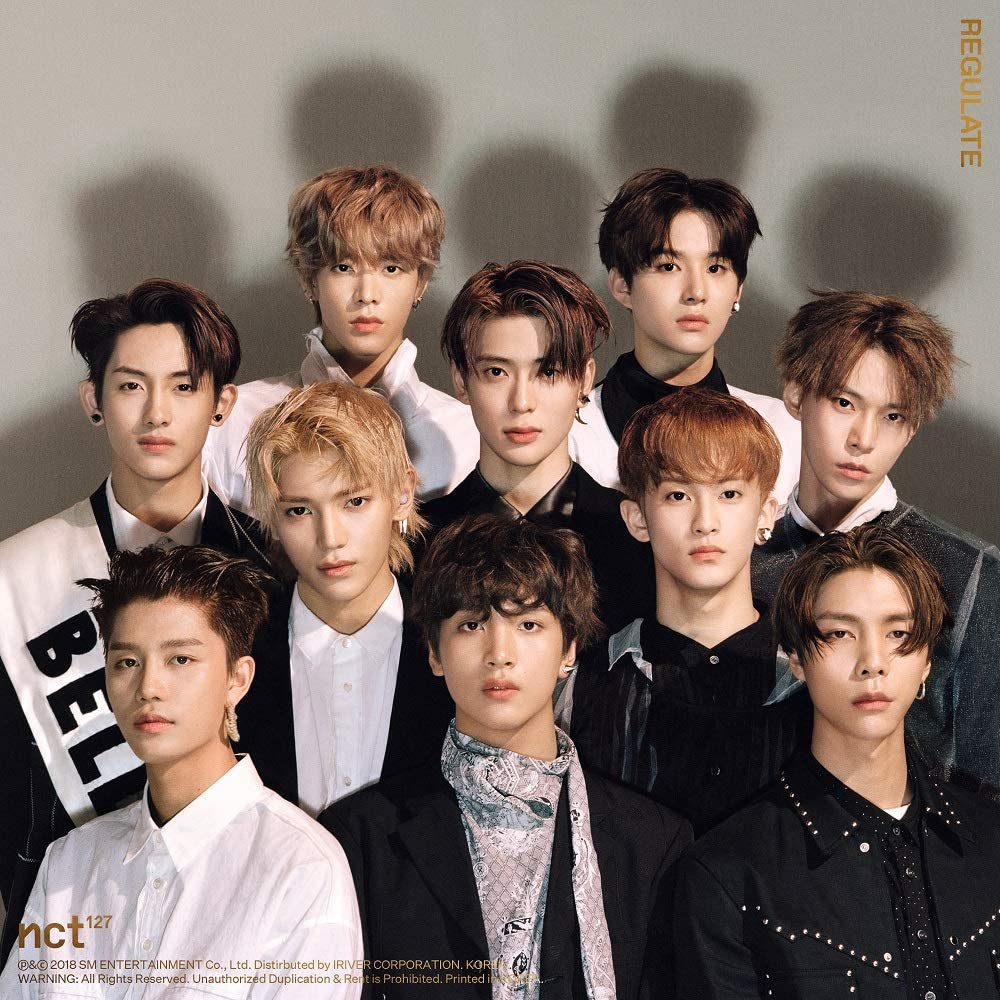
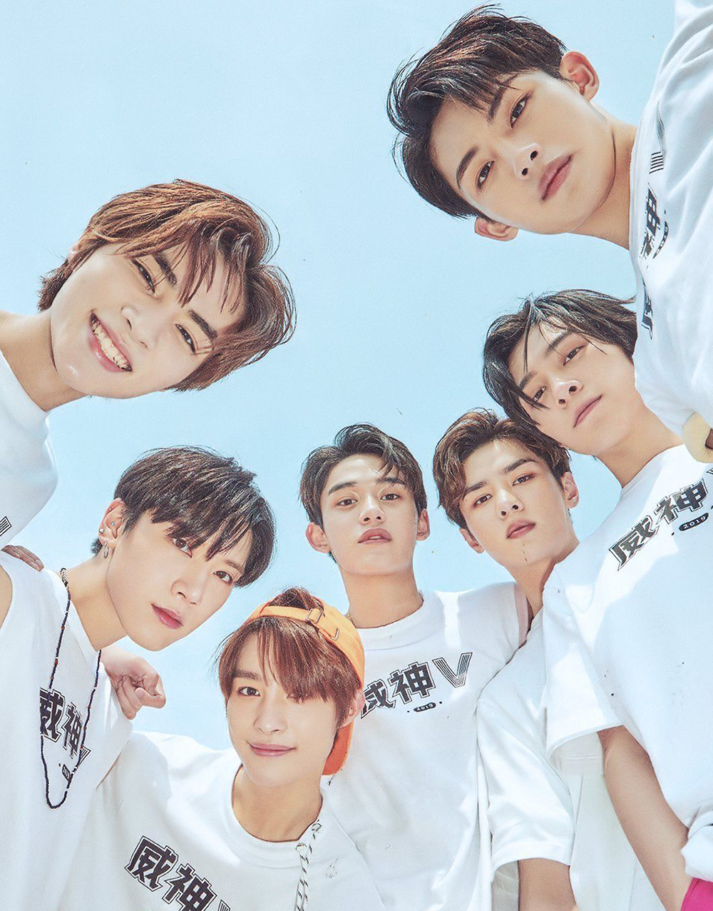
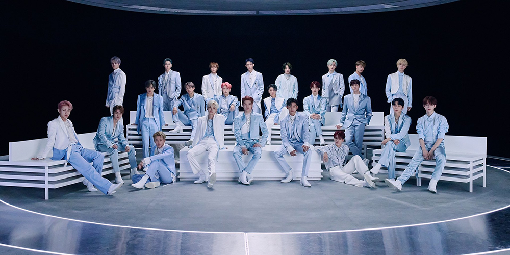

Now, the units of NCT are where most people get lost. The concept of this group is to be "Neo". Because of this concept nct has no set number of members and multiple sub-units. Only two sub-units have fixed members, the other two have rotational members. I'll explain further down below.
NCT 127

Nct 127 is one of the fixed member groups. It gets it's name from the longtitude coordinate of the city Seoul, ehich is where they are based out of. It has a total of ten members, but one of them are currently inactive due to being in the group WayV.It's members consist of Taeil, Johnny, Taeyong, Mark, Doyong, Yuta, Winwin (inactive), Jaehyun, and Haechan. They debuted in 2016 with the song Firetruck, but with only seven members. Because they are a fixed member group they will not be adding any more members nor will they lose any.
Nct Dream

Nct Dream is a bit more complicated to explain. Nct Dream focuses on the feeling of youth and their dreams, hence their name. They were once a non-fixed group and had a graduation system in place. The way the graduation system worked was that once a member turned 19 they would no longer be allowed to participate in Dream and would move on to either NCT U or another group. It orginally had seven members in the begining, ranging from ages 14 to 16. They debuted in 2016 with the song Chewing Gum. The members consist of Jisung, Chenle, Renjun, Haechan, Jeno, Jaemin, and Mark. Mark was the first to graduate in december of 2018. Recently their group was changed to a rotational group, meaning the orginal seven stayed together as Dream, but only the members that fit the current song's concept the best would promote.
NCT U

NCT U is also a rotational unit. Any members that fits the concept is put together for that song and its promotions. NCT U debuted in 2016 with members Mark, Taeyong, Ten, Doyoung, and Jaehyun.
NCT WayV

WayV is NCT's Chinese group. They are not conisdered a K-Pop group, but a C-Pop group. They debuted in 2019 with the Chinese version of the song Regular. Their group is also a fixed member group consisting of the seven following members: Kun, YangYang, Lucas, Winwin, Ten, XiaoJun, and Hendery.
NCT 2018

Nct 2018 was a project group containing all the members that were in NCT in 2018, a total of 18 members. They combined all their albums and even some new ones for the album Empathy. As soon as promotions were over at the end of 2018 NCT 2018 disbanded.
NCT 2020
